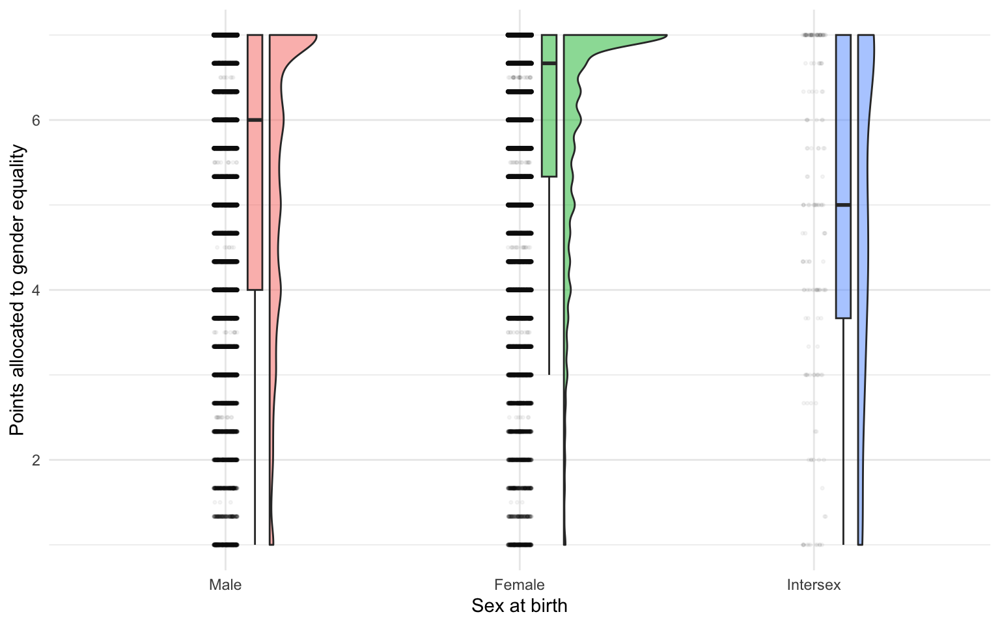
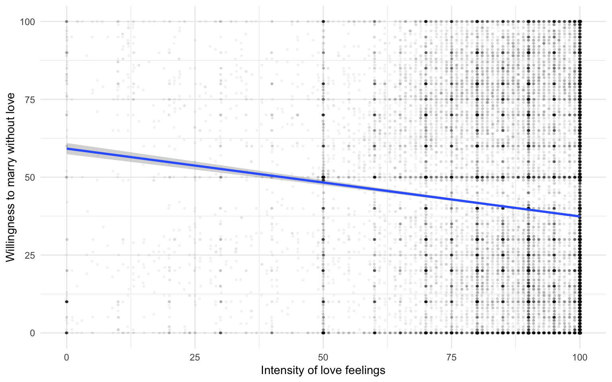

# Count respondents in each group.table(h1Data$Sex_birth)
Male Female Intersex
32147 67094 165
Code
# Summarize gender equality points separately for each group.by(h1Data$gender_equa, h1Data$Sex_birth, summary)
h1Data$Sex_birth: Male
Min. 1st Qu. Median Mean 3rd Qu. Max.
1.000 4.000 6.000 5.356 7.000 7.000
------------------------------------------------------------
h1Data$Sex_birth: Female
Min. 1st Qu. Median Mean 3rd Qu. Max.
1.000 5.333 6.667 6.051 7.000 7.000
------------------------------------------------------------
h1Data$Sex_birth: Intersex
Min. 1st Qu. Median Mean 3rd Qu. Max.
1.000 3.667 5.000 4.901 7.000 7.000
Graph
Figure 1 shows the distribution of points by sex at birth. The half-violin shows the shape of the distribution, the box summarizes the median and quartiles, and the dots represent individual responses.
Code
ggplot(h1Data, aes(x = Sex_birth, y = gender_equa,fill = Sex_birth)) +geom_rain(alpha =0.5, point.args =list(alpha =0.04, size =0.6)) +labs(x ="Sex at birth", y ="Points allocated to gender equality") +theme_minimal() +theme(legend.position ="none")

Figure 1: Points allocated to gender equality, by sex at birth.
H2.
Intensity of love feelings may negatively predict the willingness to marry without love.
Variables and descriptive statistics
Intensity of love feelings (Love_how_much_1): A single item about how much one loves partner, applicable to only those in a relationship. Responses range from 1 to 100.
Willingness to marry without love (Love_would_you_marry_1): higher scores indicate greater willingness
This dataset includes respondents who were dating, in a committed relationship, or married.
Love_how_much_1 Love_would_you_marry_1
Min. : 0.00 Min. : 0.00
1st Qu.: 83.00 1st Qu.: 4.00
Median : 98.00 Median : 30.00
Mean : 89.43 Mean : 39.71
3rd Qu.:100.00 3rd Qu.: 70.00
Max. :100.00 Max. :100.00
Graph
Figure 2 shows the relationship between Intensity of love feelings and Willingness to marry without love. Points are jittered to make overlapping responses easier to see; the recorded scores are unchanged. The line summarizes the linear trend.
Code
ggplot(h2Data, aes(x = Love_how_much_1, y = Love_would_you_marry_1)) +geom_jitter(width = .12, height = .04, alpha = .04, size = .6) +geom_smooth(method ="lm") +labs(x ="Intensity of love feelings",y ="Willingness to marry without love") +theme_minimal()
`geom_smooth()` using formula = 'y ~ x'

Figure 2: Relationship between love feeling and willingness to marry without love.
Observed trend
Code
r <-cor(h2Data$Love_how_much_1, h2Data$Love_would_you_marry_1, use ="complete.obs")round(r, 2)
[1] -0.1
The correlation was -0.1, indicating a weak negative association. Respondents who reported more love feeling tended to report lower willingness to marry without love.